Chapter 22 - Graphics for communication
Vebash Naidoo
09/11/2020
Last updated: 2020-11-10
Checks: 7 0
Knit directory: r4ds_book/
This reproducible R Markdown analysis was created with workflowr (version 1.6.2). The Checks tab describes the reproducibility checks that were applied when the results were created. The Past versions tab lists the development history.
Great! Since the R Markdown file has been committed to the Git repository, you know the exact version of the code that produced these results.
Great job! The global environment was empty. Objects defined in the global environment can affect the analysis in your R Markdown file in unknown ways. For reproduciblity it’s best to always run the code in an empty environment.
The command set.seed(20200814) was run prior to running the code in the R Markdown file. Setting a seed ensures that any results that rely on randomness, e.g. subsampling or permutations, are reproducible.
Great job! Recording the operating system, R version, and package versions is critical for reproducibility.
Nice! There were no cached chunks for this analysis, so you can be confident that you successfully produced the results during this run.
Great job! Using relative paths to the files within your workflowr project makes it easier to run your code on other machines.
Great! You are using Git for version control. Tracking code development and connecting the code version to the results is critical for reproducibility.
The results in this page were generated with repository version cf689c8. See the Past versions tab to see a history of the changes made to the R Markdown and HTML files.
Note that you need to be careful to ensure that all relevant files for the analysis have been committed to Git prior to generating the results (you can use wflow_publish or wflow_git_commit). workflowr only checks the R Markdown file, but you know if there are other scripts or data files that it depends on. Below is the status of the Git repository when the results were generated:
Ignored files:
Ignored: .Rproj.user/
Untracked files:
Untracked: analysis/images/
Untracked: code_snipp.txt
Note that any generated files, e.g. HTML, png, CSS, etc., are not included in this status report because it is ok for generated content to have uncommitted changes.
These are the previous versions of the repository in which changes were made to the R Markdown (analysis/ch22_graphics_for_comms.Rmd) and HTML (docs/ch22_graphics_for_comms.html) files. If you’ve configured a remote Git repository (see ?wflow_git_remote), click on the hyperlinks in the table below to view the files as they were in that past version.
| File | Version | Author | Date | Message |
|---|---|---|---|---|
| Rmd | cf689c8 | sciencificity | 2020-11-10 | finished ch22 |
ggplot
Click on the tab buttons below for each section
Introduction
Label
You add labels with the
labs()function.title: The purpose of a plot title is to summarise the main finding.subtitle: adds additional detail in a smaller font beneath the title.caption: adds text at the bottom right of the plot, often used to describe the source of the data.x: replaces x-axis name (sometimes you want more descriptive names, or units).y: replaces y-axis name (sometimes you want more descriptive names, or units).- The legend titles are replaced using the aesthetic that made it - e.g.
colourorfill.
ggplot(mpg, aes(displ, hwy)) +
geom_point(aes(color = class)) +
geom_smooth(se = FALSE) +
labs(title = "Fuel efficiency generally decreases with engine size")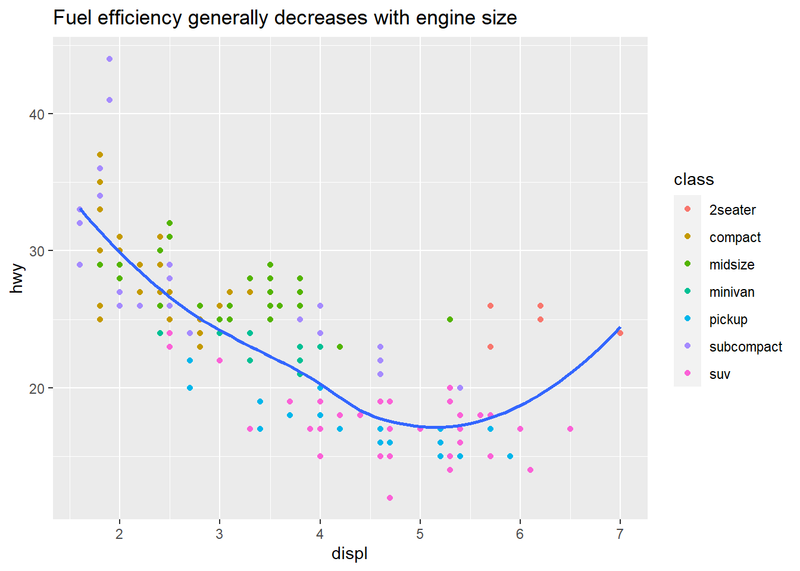
ggplot(mpg, aes(displ, hwy)) +
geom_point(aes(colour = class)) +
geom_smooth(se = FALSE) +
labs(title = str_glue("Fuel efficiency generally decreases ",
"with engine size"),
subtitle = str_glue("Two seaters (sports cars) are the ",
"exception because of their light weight"),
caption = "Data from fueleconomy.gov")
ggplot(mpg, aes(displ, hwy)) +
geom_point(aes(colour = class)) +
geom_smooth(se = FALSE) +
labs(
x = "Engine displacement (L)",
y = "Highway fuel economy (mpg)",
colour = "Car type"
)
It’s possible to use mathematical equations instead of text strings. Just switch "" out for quote() and read about the available options in ?plotmath.
df <- tibble(
x = runif(10),
y = runif(10)
)
ggplot(df, aes(x, y)) +
geom_point() +
labs(
x = quote(sum(x[i]^2, i == 1, n)),
y = quote(alpha + beta + frac(delta, theta))
)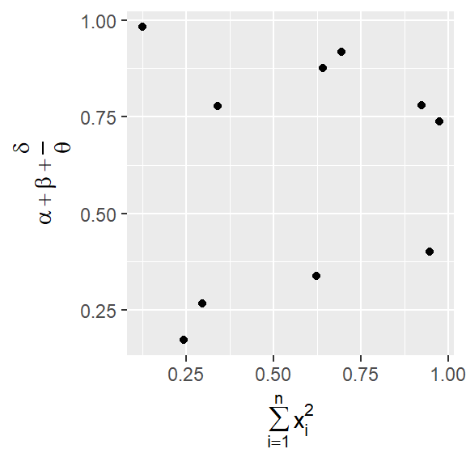
Exercises
Create one plot on the fuel economy data with customised
title,subtitle,caption,x,y, andcolourlabels.ggplot(mpg, aes(class, hwy)) + geom_boxplot() + geom_jitter(aes(colour = displ), width = 0.1, height = 0) + labs(title = "Fuel efficiency is worst for pickups and suv", subtitle = "These vehicle types have the bigger engine size", x = "Car Type", y = "Highway fuel economy (mpg)", colour = "Engine size" )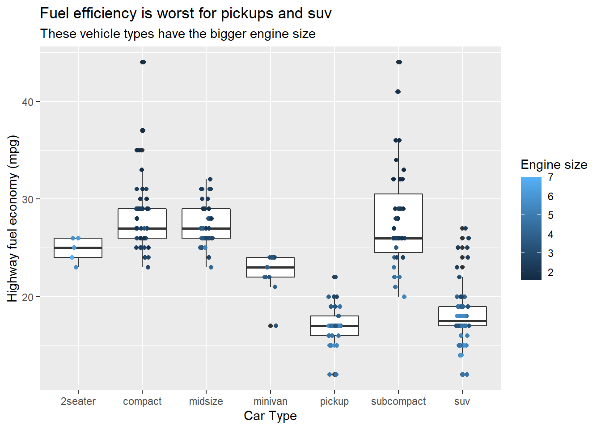
The
geom_smooth()is somewhat misleading because thehwyfor large engines is skewed upwards due to the inclusion of lightweight sports cars with big engines. Use your modelling tools to fit and display a better model.ggplot(mpg, aes(displ, hwy, colour = class)) + geom_point() + geom_smooth(method = "lm", se = FALSE) + scale_colour_disney("pan") + labs(title = str_glue("Fuel efficiency generally decreases ", "with engine size"), subtitle = str_glue("Two seaters (sports cars) are the ", "exception because of their light weight"), caption = "Data from fueleconomy.gov", x = "Engine displacement (L)", y = "Highway fuel economy (mpg)", colour = "Car type")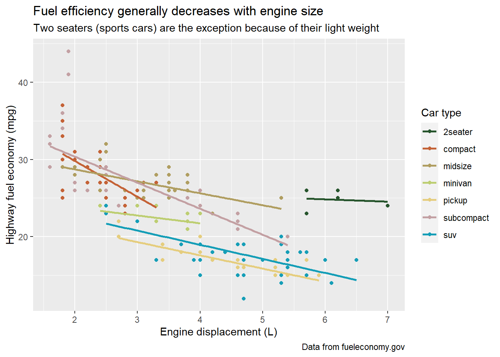
Take an exploratory graphic that you’ve created in the last month, and add informative titles to make it easier for others to understand.
Annotations
Annotations
It’s also often useful to label individual observations or groups of observations. The first tool you have at your disposal is geom_text(). geom_text() is similar to geom_point(), but it has an additional aesthetic - label. This makes it possible to add textual labels to your plots.
- a tibble that provides labels
- ?? find out in exercises
mpg %>%
select(class, displ, hwy, model) %>%
group_by(class) %>%
mutate(rn = row_number(desc(hwy))) %>%
filter(rn %in% c(1,2))
#> # A tibble: 14 x 5
#> # Groups: class [7]
#> class displ hwy model rn
#>
#> 1 2seater 5.7 26 corvette 1
#> 2 2seater 6.2 26 corvette 2
#> 3 minivan 2.4 24 caravan 2wd 1
#> 4 minivan 3 24 caravan 2wd 2
#> 5 midsize 2.4 31 sonata 2
#> 6 midsize 2.5 32 altima 1
#> 7 suv 2.5 27 forester awd 1
#> 8 suv 2.5 26 forester awd 2
#> 9 compact 1.8 37 corolla 2
#> 10 pickup 2.7 20 toyota tacoma 4wd 2
#> 11 pickup 2.7 22 toyota tacoma 4wd 1
#> 12 compact 1.9 44 jetta 1
#> 13 subcompact 1.9 44 new beetle 1
#> 14 subcompact 1.9 41 new beetle 2
# create a tibble for your label data
best_in_class <- mpg %>%
group_by(class) %>%
filter(row_number(desc(hwy)) == 1)
ggplot(mpg, aes(displ, hwy)) +
geom_point(aes(colour = class)) +
geom_text(aes(label = model), # the label should be the model in your tbl
# use your label data
data = best_in_class) 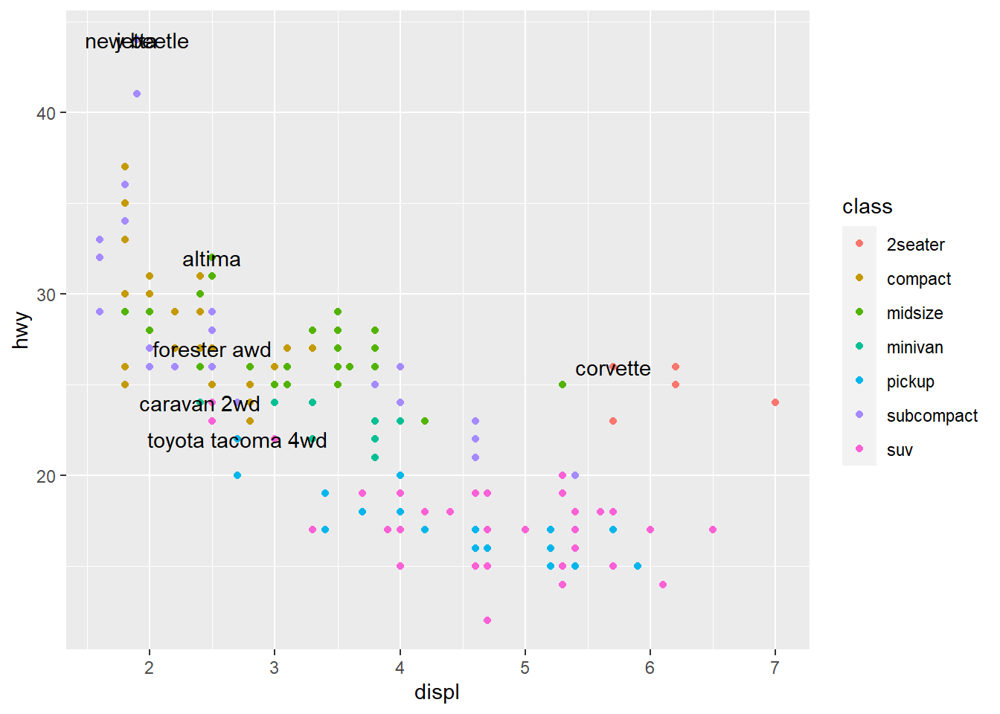
It is sometimes hard to read, like here, where labels overlap with each other, and with the points. We can make things a little better by switching to geom_label() which draws a rectangle behind the text. We also use the nudge_y parameter to move the labels slightly above the corresponding points.
ggplot(data = mpg, aes(displ, hwy)) +
geom_point(aes(colour = class)) +
geom_label(aes(label = model),
data = best_in_class,
nudge_y = 2,
alpha = 0.5)
There is still a problem in that there are two labels on top of each other in the left corner. We can use the ggrepel package by Kamil Slowikowski which automatically adjusts labels so that they don’t overlap ❗ ❤️
ggplot(mpg, aes(displ, hwy)) +
geom_point(aes(colour = class)) +
# add a second layer of large, hollow points to
# highlight the points labelled
geom_point(size = 3, shape = 1,
data = best_in_class)
ggplot(mpg, aes(displ, hwy)) +
geom_point(aes(colour = class)) +
geom_point(size = 3, shape = 1,
data = best_in_class) +
ggrepel::geom_label_repel(aes(label = model),
data = best_in_class)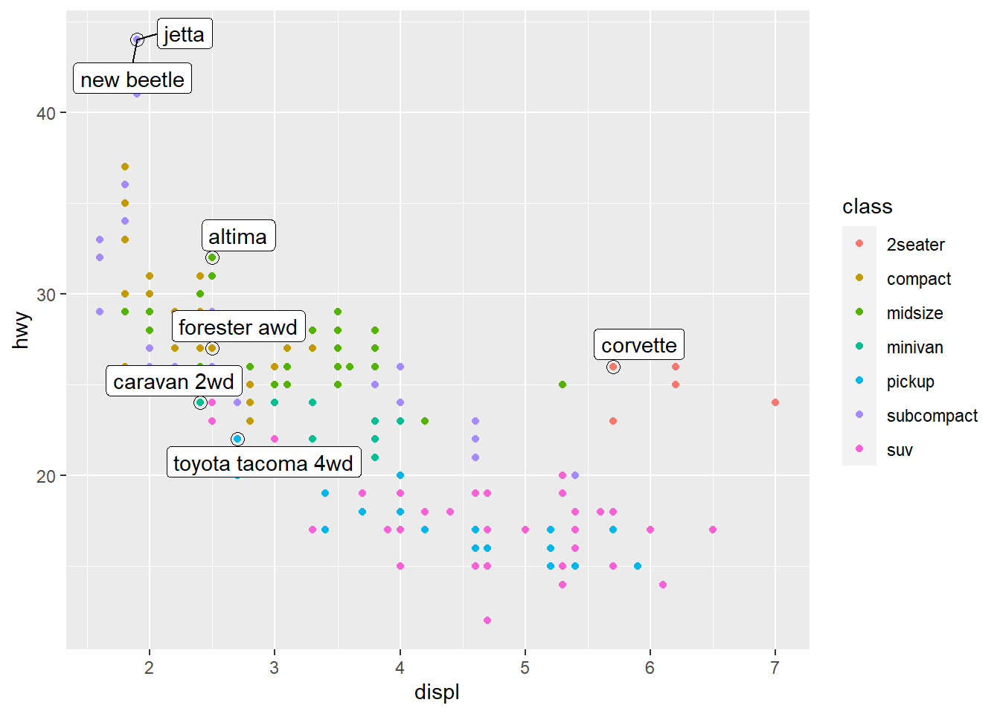
theme(legend.position = "none") turns the legend off.
# find the median displ, hwy for each class
class_avg <- mpg %>%
group_by(class) %>%
summarise(
displ = median(displ),
hwy = median(hwy)
)
ggplot(mpg, aes(displ, hwy,
# move up here since used by both
# geom_label_repel - to colour label text
# and geom_point to colour points
colour = class)) +
ggrepel::geom_label_repel(aes(label = class), # stick label in median place
data = class_avg,
size = 6,
label.size = 0,
segment.colour = NA) +
geom_point() +
# we've replaced our legend by labels on the plot
# in the median position!
theme(legend.position = "none")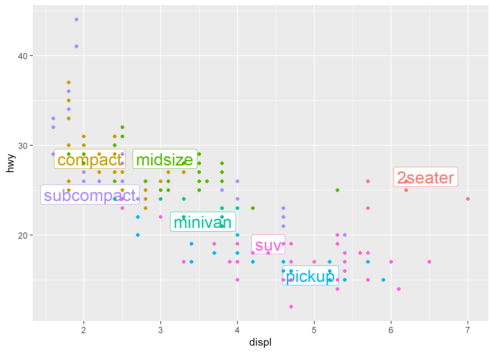
You may want to add a single label to the plot, but you’ll still need to create a data frame.
Often, you want the label in the corner of the plot, so it’s convenient to create a new data frame using summarise() to compute the maximum values of x and y.
label <- mpg %>%
summarise(
displ = max(displ),
hwy = max(hwy),
label = "Increasing engine size is \nrelated to decreasing fuel economy."
)
ggplot(mpg, aes(displ, hwy)) +
geom_point() +
geom_text(aes(label = label),
data = label,
vjust = "top", hjust = "right")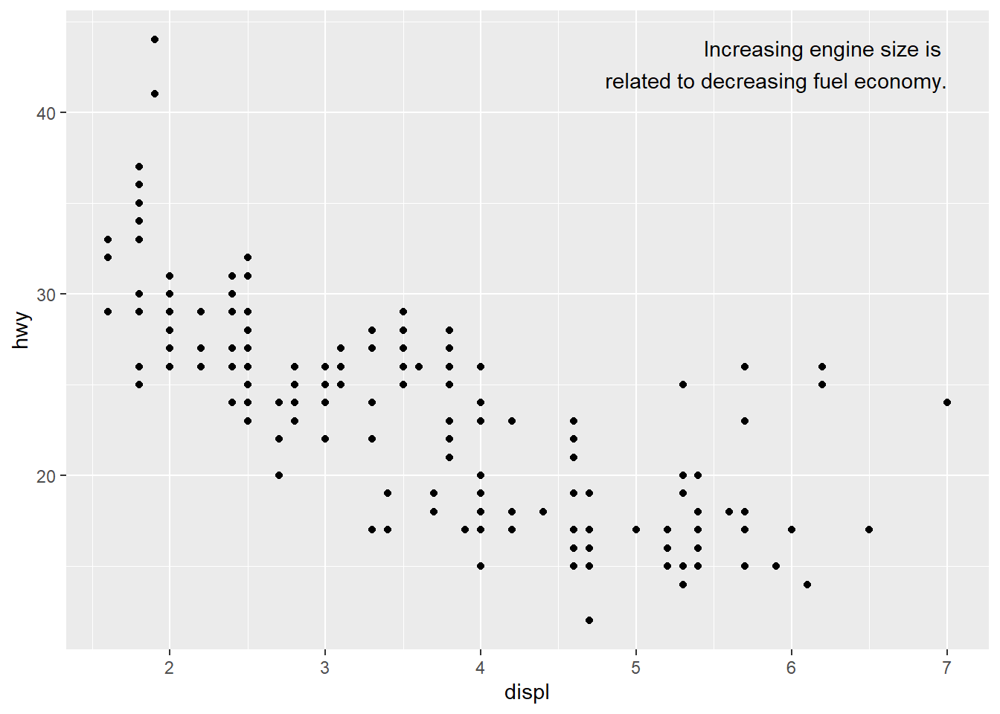
If you want to place the text exactly on the borders of the plot, you can use +Inf and -Inf. Note we use tibble here since we have more “static” data.
label <- tibble(
displ = Inf,
hwy = Inf,
label = "Increasing engine size is \nrelated to decreasing fuel economy."
)
ggplot(mpg, aes(displ, hwy)) +
geom_point() +
geom_text(aes(label = label), data = label,
vjust = "top", hjust = "right")
We manually broke the label up into lines using "\n" but we may have used stringr::str_wrap() to automatically add line breaks.
"Increasing engine size is related to decreasing fuel economy." %>%
# break the above text up automatically
# I want 40 characters per line
stringr::str_wrap(width = 40) %>%
writeLines()
#> Increasing engine size is related to
#> decreasing fuel economy.label <- tibble(
displ = Inf,
hwy = Inf,
label = stringr::str_wrap("Increasing engine size is
related to decreasing fuel economy.",
width = 35)
)
ggplot(mpg, aes(displ, hwy)) +
geom_point() +
geom_text(aes(label = label), data = label,
vjust = "top", hjust = "right")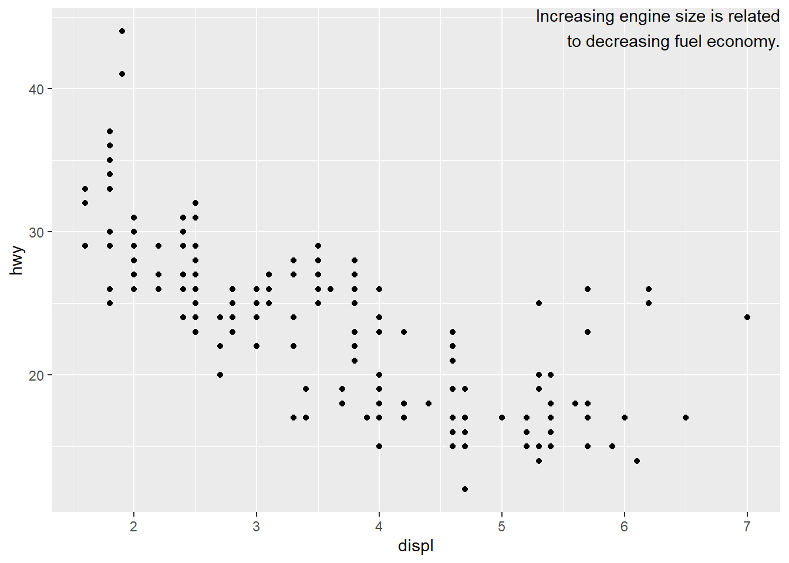
All nine combinations of hjust and vjust.
Exercises
Use
geom_text()with infinite positions to place text at the four corners of the plot.I am not sure if it is just me but I am unable to do it with Inf and -Inf.
So I used 0, 1 as the authors did for the
hjust,vjustplot, and tweaked it for my case here.vjust <- c("top", "top", "bottom", "bottom") hjust <- c("left", "right", "left", "right") label <- c("Top left", "Top right", "Bottom left", "Bottom right") x <- c(0, 1, 0, 1) y <- c(1, 1, 0, 0) df <- tibble(x = x, y = y, label = label, vjust = vjust, hjust = hjust) ggplot(df, aes(x, y)) + geom_text(aes(label = label), vjust = vjust, hjust = hjust) + scale_x_continuous(labels = NULL) + scale_y_continuous(labels = NULL) + labs(x = "", y = "")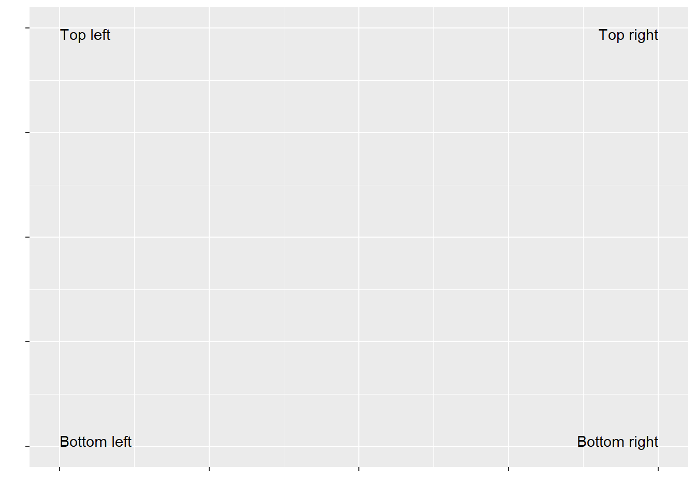
Read the documentation for
annotate(). How can you use it to add a text label to a plot without having to create a tibble?Some examples from the help page below. Used when you want to add some static text. I like the use of it for things like \(italic(R) ^ 2 == 0.75\), and also seems useful for marking anomalies on a plot.
p <- ggplot(mtcars, aes(x = wt, y = mpg)) + geom_point() p + annotate("text", x = 2:5, y = 25, label = "Some text")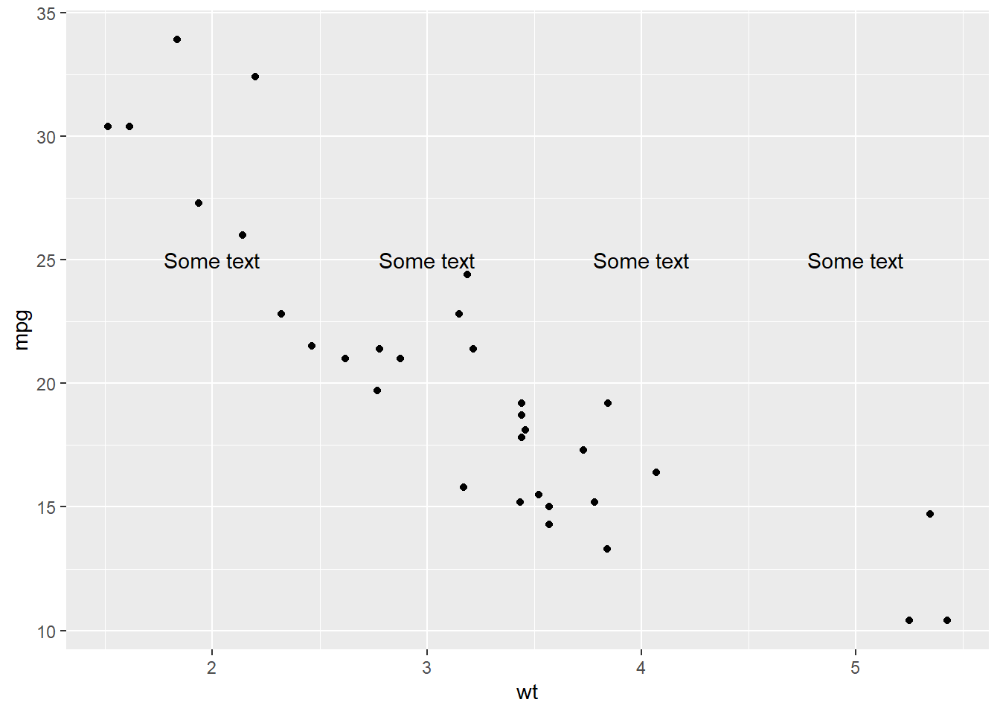
p + annotate("rect", xmin = 3, xmax = 4.2, ymin = 12, ymax = 21, alpha = .2)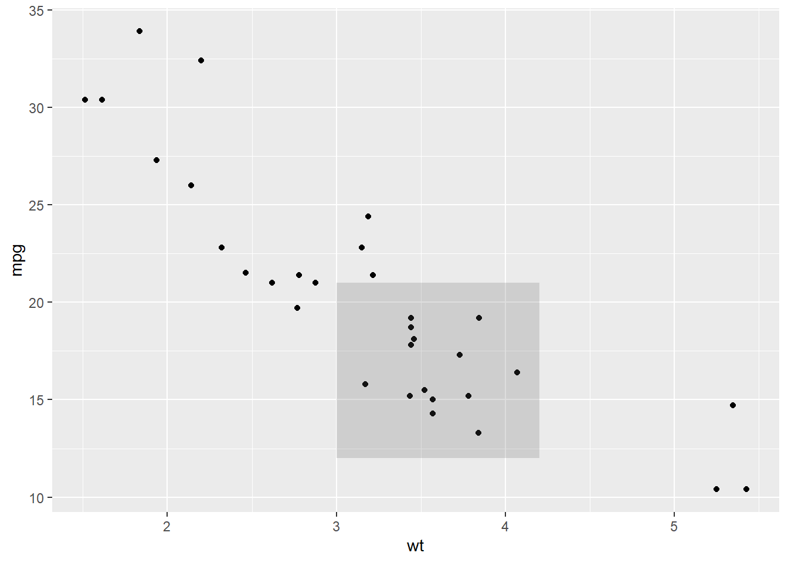
p + annotate("text", x = 2:3, y = 20:21, label = c("my label", "label 2"))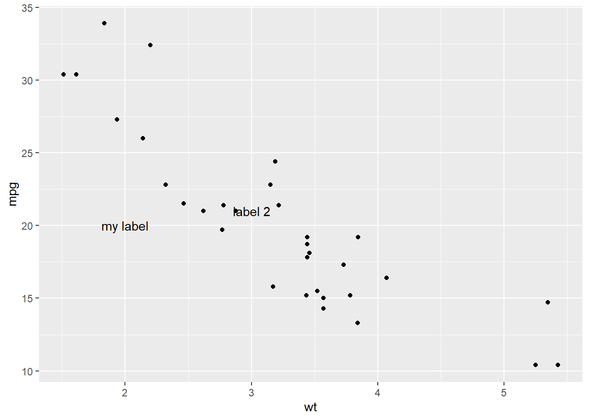
p + annotate("text", x = 4, y = 25, label = "italic(R) ^ 2 == 0.75", parse = TRUE)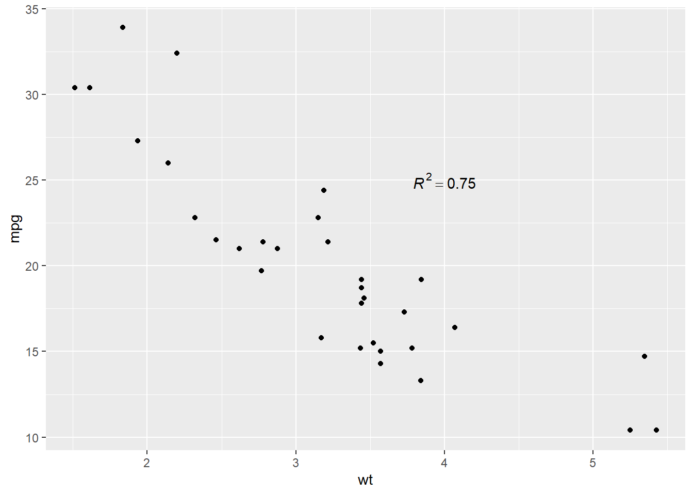
How do labels with
geom_text()interact with faceting? How can you add a label to a single facet? How can you put a different label in each facet? (Hint: think about the underlying data.)# Got this example from this SO post # https://stackoverflow.com/questions/15867263/ggplot2-geom-text-with-facet-grid x <-runif(9, 0, 125) data <- as.data.frame(x) data$y <- runif(9, 0, 125) data$yy <- factor(c("a","b","c")) ggplot(data, aes(x, y)) + geom_point(shape = 2) + facet_grid(~yy) + geom_text(aes(x, y, label=lab), data=data.frame(x=60, y=Inf, lab=c("this","is","the way"), yy=letters[1:3]), vjust=1)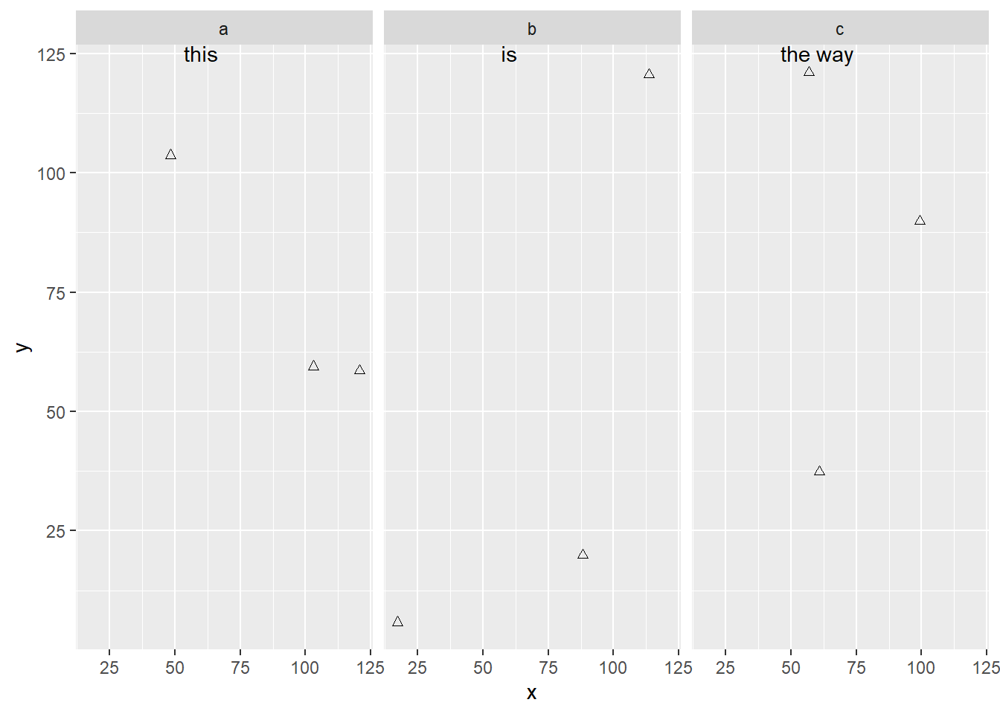
ggplot(data, aes(x, y)) + geom_point(shape = 2) + facet_grid(~yy) + geom_text(aes(x, y, label=lab), # text on one facet data=data.frame(x=60, y=Inf, lab=c("this is the only way"), yy=letters[1]), # one facet only vjust=1)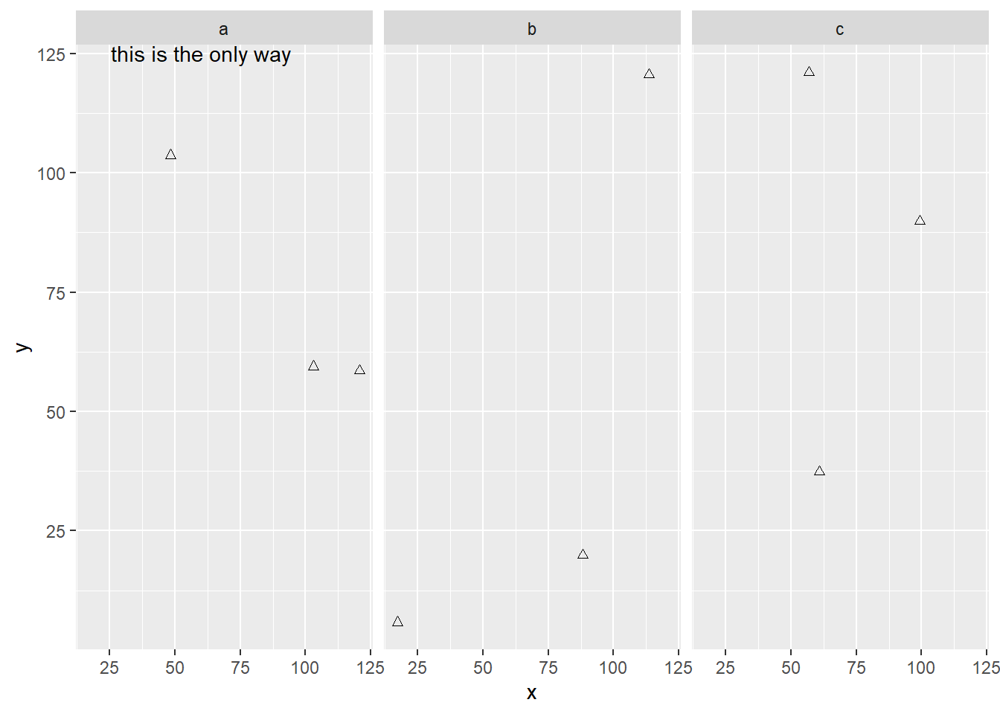
What arguments to
geom_label()control the appearance of the background box?- label.padding: Amount of padding around label. Defaults to 0.25 lines.
- label.r: Radius of rounded corners. Defaults to 0.15 lines.
- label.size: Size of label border, in mm.
What are the four arguments to
arrow()? How do they work? Create a series of plots that demonstrate the most important options.Tweaked from this Stack Overflow post.
ggplot(mtcars, aes(wt, mpg)) + geom_point() + geom_segment(aes(x = 5, y = 30, xend = 3.5, yend = 25), arrow = arrow(length = unit(0.5, "cm")))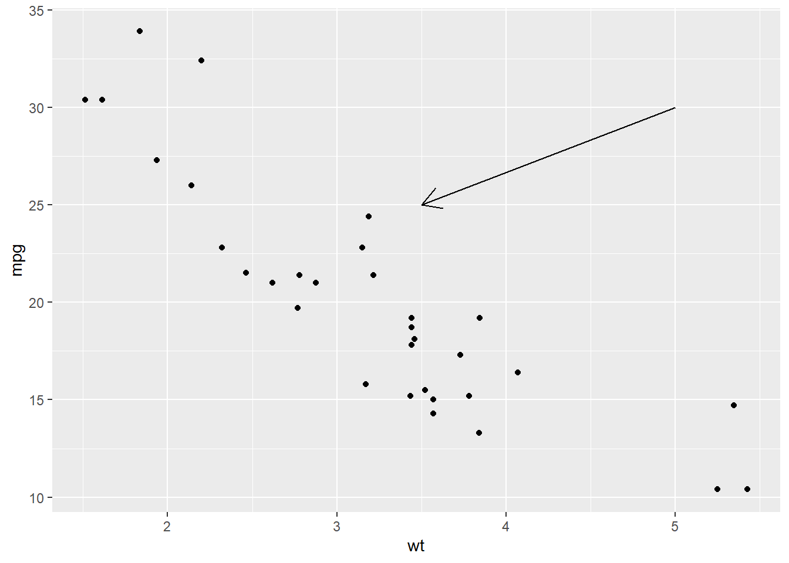
ggplot(mtcars, aes(wt, mpg)) + geom_point() + geom_segment(aes(x = 5, y = 30, xend = 3.5, yend = 25), arrow = arrow(length = unit(0.5, "cm"), type = "closed"))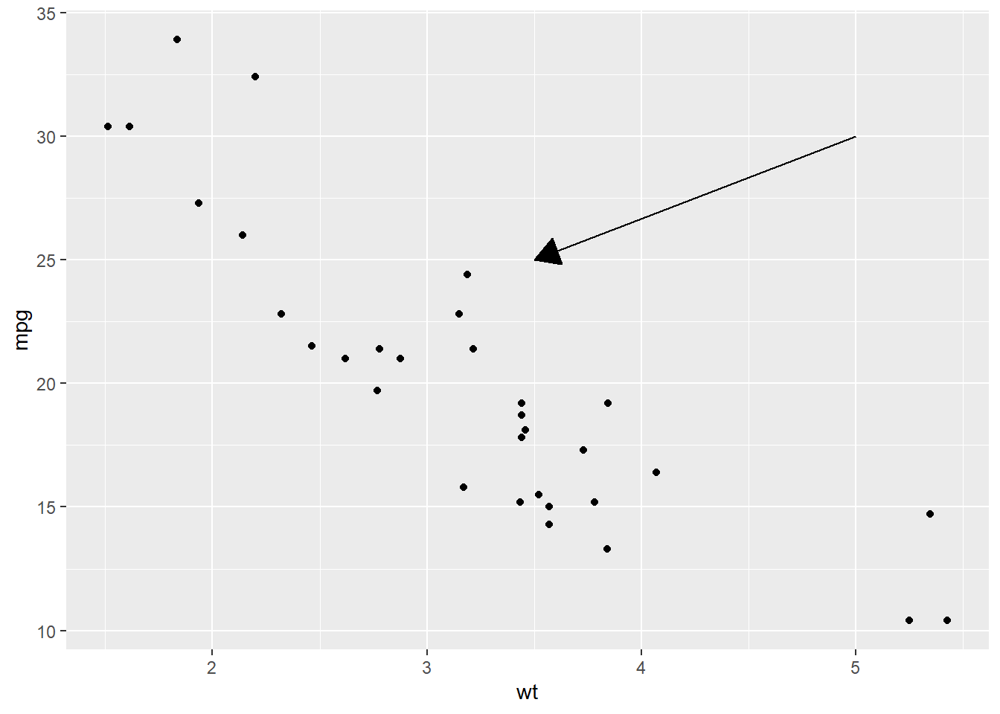
ggplot(mtcars, aes(wt, mpg)) + geom_point() + geom_segment(aes(x = 5, y = 30, xend = 3.5, yend = 25), arrow = arrow(length = unit(0.5, "cm"), type = "closed", ends = "both"))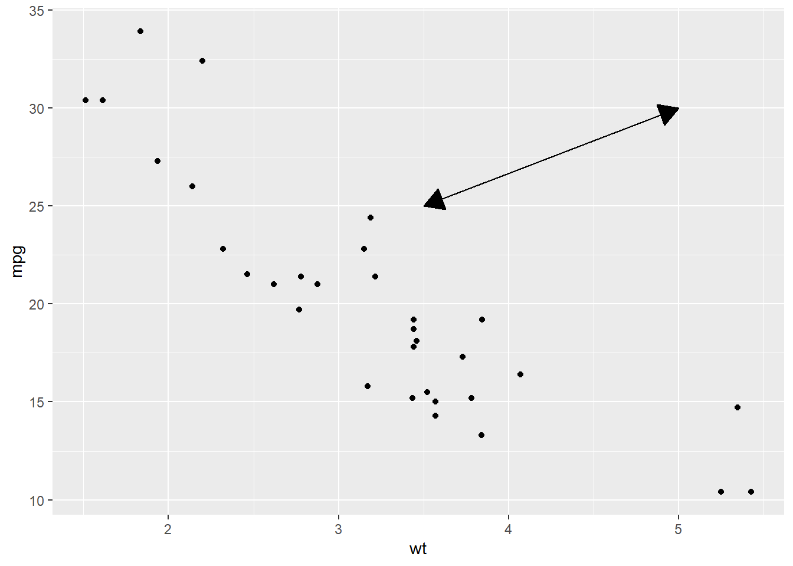
ggplot(mtcars, aes(wt, mpg)) + geom_point() + geom_segment(aes(x = 5, y = 30, xend = 3.5, yend = 25), arrow = arrow(angle = 60, # how narrow or wide the arrow head length = unit(0.5, "cm"), type = "closed", ends = "both"))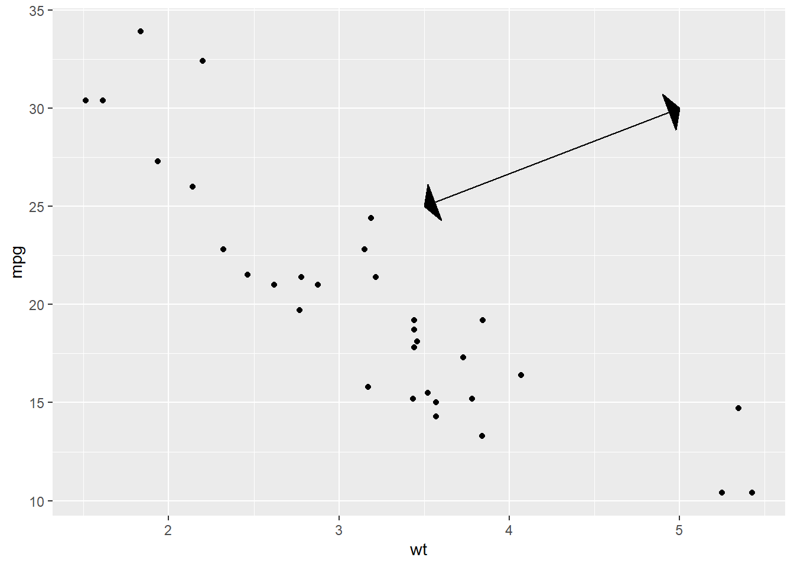
ggplot(mtcars, aes(wt, mpg)) + geom_point() + geom_segment(aes(x = 5, y = 30, xend = 3.5, yend = 25), arrow = arrow(angle = 15, # how narrow or wide the arrow head length = unit(0.5, "cm"), type = "closed", ends = "both"))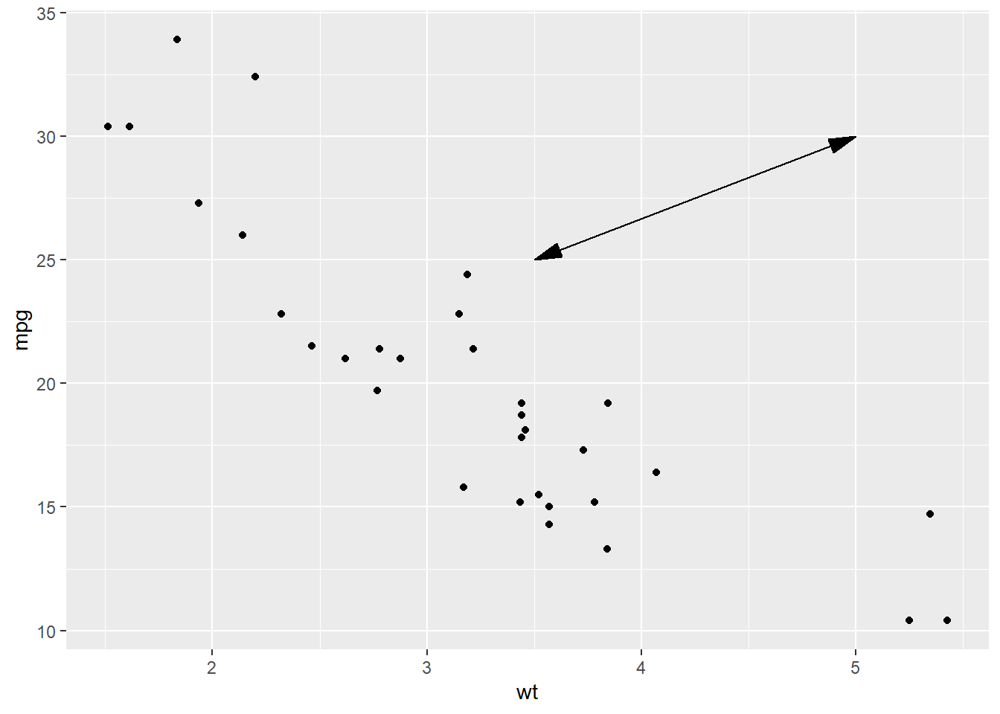
Scales
Scales
You can also make your plot better for communication by adjusting the scales. ggplot2 automatically adds sensible default scales behind the scenes for you.
ggplot(mpg, aes(displ, hwy)) +
geom_point(aes(colour = class))
Note this is the same as above.
ggplot(mpg, aes(displ, hwy)) +
geom_point(aes(colour = class)) +
scale_x_continuous() +
scale_y_continuous() +
scale_colour_discrete()
Axis ticks and legend keys
Collectively axes and legends are called guides. Axes are used for x and y aesthetics; legends are used for everything else.
breakscontrols the position of the axis ticks, or the values associated with the legend keys.labelscontrols the text label associated with each tick/key. Supply a character vector the same length asbreaksOR suppress labels by usingNULL.When is
NULLappropriate? Useful for maps, or when you can’t share absolute numbers in a published plot.Breaks and labels for datetimes is a bit different:
date_labelstakes a format specification, in the same form asparse_datetime().date_breaks, takes a string like “2 days” or “1 month”.
ggplot(mpg, aes(displ, hwy)) +
geom_point(aes(colour = class)) +
scale_y_continuous(breaks = seq(15, 40, by = 5))
ggplot(mpg, aes(displ, hwy)) +
geom_point() +
scale_x_continuous(labels = NULL) +
scale_y_continuous(labels = NULL)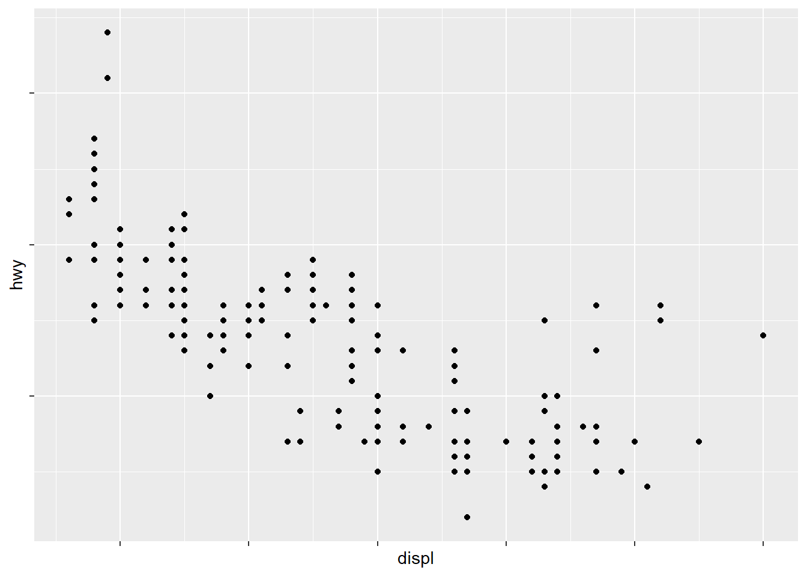
presidential %>%
# add the number of the president,
# e.g. Obama was the 44th president of USA
mutate(id = 33 + row_number())
#> # A tibble: 11 x 5
#> name start end party id
#> <chr> <date> <date> <chr> <dbl>
#> 1 Eisenhower 1953-01-20 1961-01-20 Republican 34
#> 2 Kennedy 1961-01-20 1963-11-22 Democratic 35
#> 3 Johnson 1963-11-22 1969-01-20 Democratic 36
#> 4 Nixon 1969-01-20 1974-08-09 Republican 37
#> 5 Ford 1974-08-09 1977-01-20 Republican 38
#> 6 Carter 1977-01-20 1981-01-20 Democratic 39
#> 7 Reagan 1981-01-20 1989-01-20 Republican 40
#> 8 Bush 1989-01-20 1993-01-20 Republican 41
#> 9 Clinton 1993-01-20 2001-01-20 Democratic 42
#> 10 Bush 2001-01-20 2009-01-20 Republican 43
#> 11 Obama 2009-01-20 2017-01-20 Democratic 44
presidential %>%
# add the number of the president,
# e.g. Obama was the 44th president of USA
mutate(id = 33 + row_number()) %>%
ggplot(aes(start, id)) +
geom_point() +
geom_segment(aes(xend = end, yend = id)) +
scale_x_date(NULL,
breaks = presidential$start,
date_labels = "'%y") +
ggrepel::geom_label_repel(aes(label = name),
nudge_x = 0.5,
nudge_y = 0.4)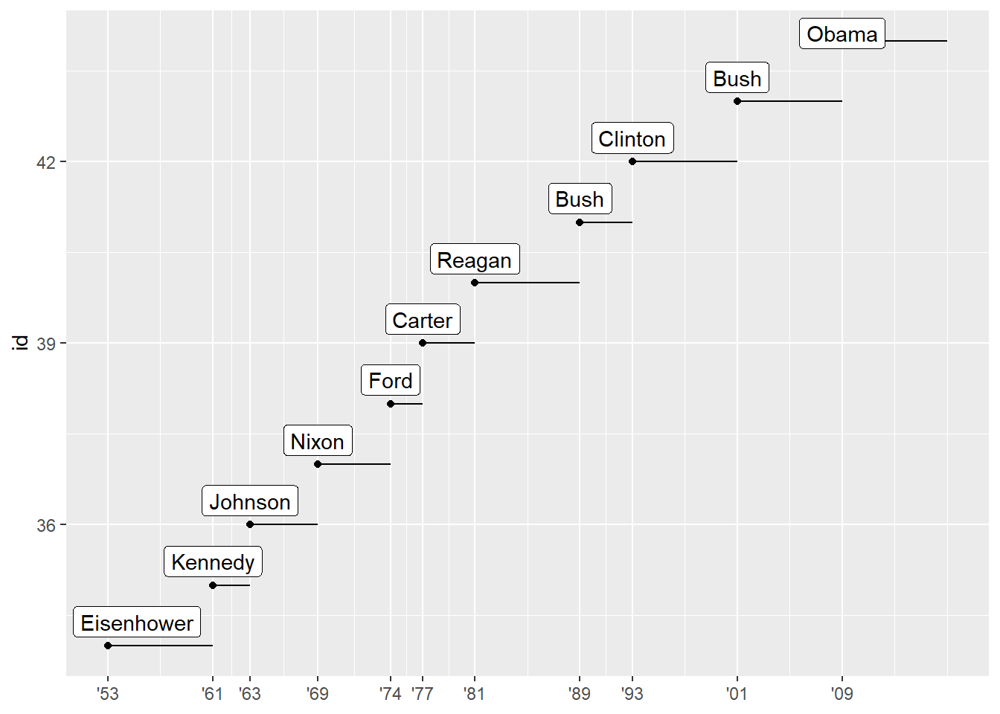
Legend layout
To control the overall position of the legend, you need to use a theme()
setting. The theme setting legend.position controls where the legend is drawn. You can also use legend.position = "none" to hide the display of the legend.
base <- ggplot(mpg, aes(displ, hwy)) +
geom_point(aes(colour = class))
base + theme(legend.position = "left")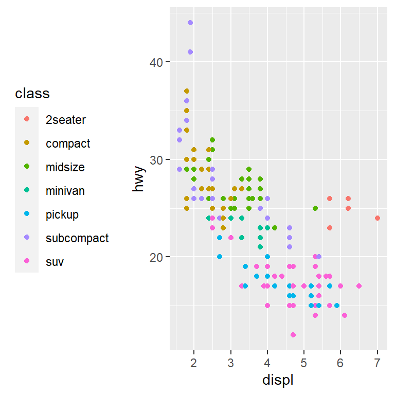
base + theme(legend.position = "top")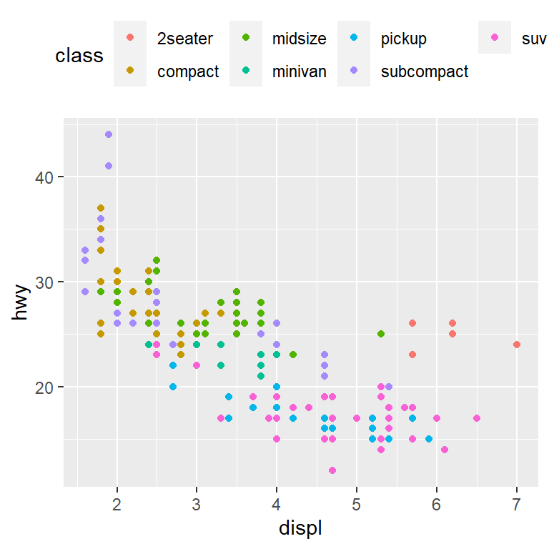
base + theme(legend.position = "bottom")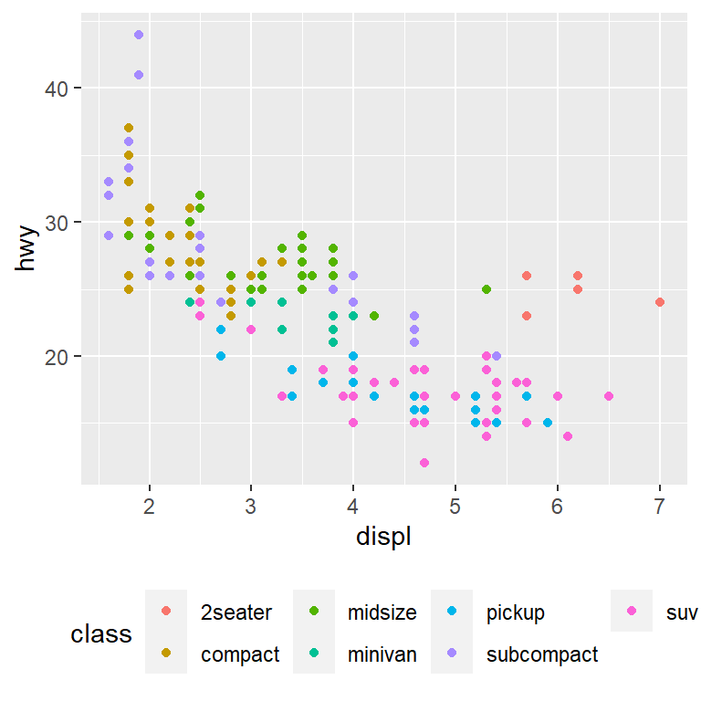
base + theme(legend.position = "right") # the default
- To control the display of individual legends, use
guides()along withguide_legend()orguide_colourbar(). - Control the number of rows the legend uses with
nrow - Override one of the aesthetics to make the points bigger. Useful if you have used a low
alphato display many points on a plot.
ggplot(mpg, aes(displ, hwy)) +
geom_point(aes(colour = class)) +
geom_smooth(se = FALSE) +
theme(legend.position = "bottom") +
guides(colour = guide_legend(nrow = 1,
override.aes = list(size = 4)))
ggplot(mpg, aes(displ, hwy)) +
geom_point(aes(colour = class)) +
geom_smooth(se = FALSE) +
theme(legend.position = "bottom") +
guides(colour = guide_legend(nrow = 4,
override.aes = list(size = 5)))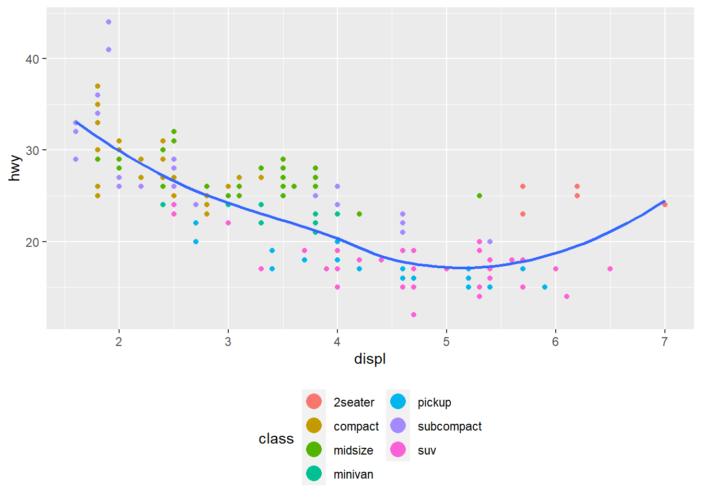
Replacing a scale
Sometimes you will want to replace a scale completely - we have done this before when we log transformed graphs.
Aesthetic mapping Transform
ggplot(diamonds, aes(carat, price)) +
geom_bin2d()
# disadvantage of this transformation is that the axes are
# now labelled with the transformed values, making it hard to interpret the plot
ggplot(diamonds, aes(log10(carat), log10(price))) +
geom_bin2d()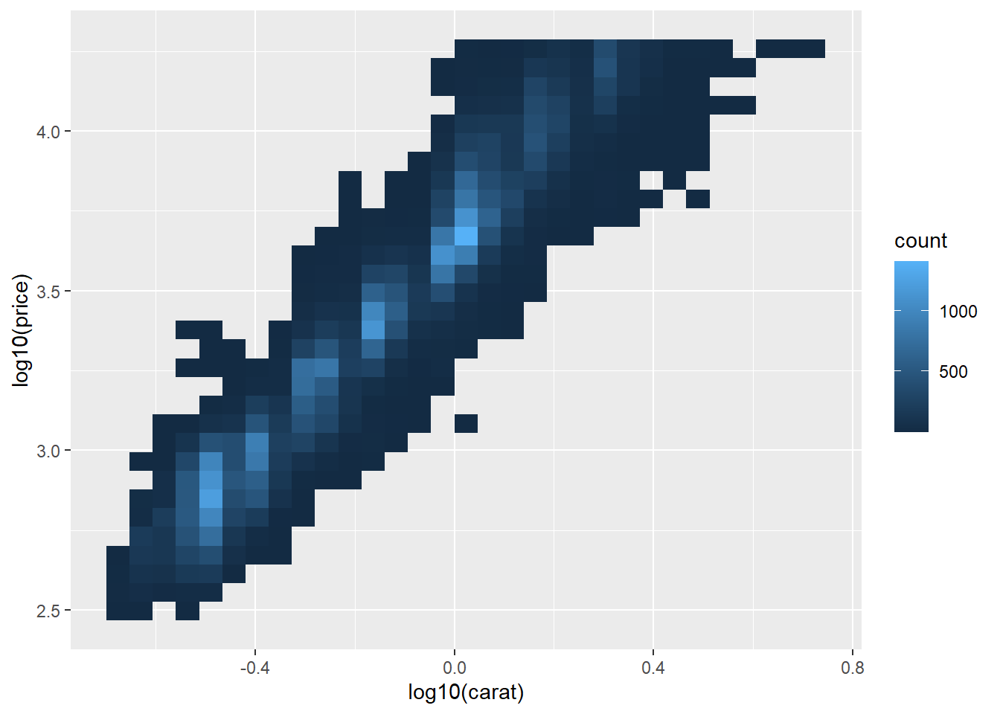
Scale Transform
Visually identical to above, except the axes are labelled using the original data scale.
ggplot(diamonds, aes(carat, price)) +
geom_bin2d() +
scale_x_log10() +
scale_y_log10()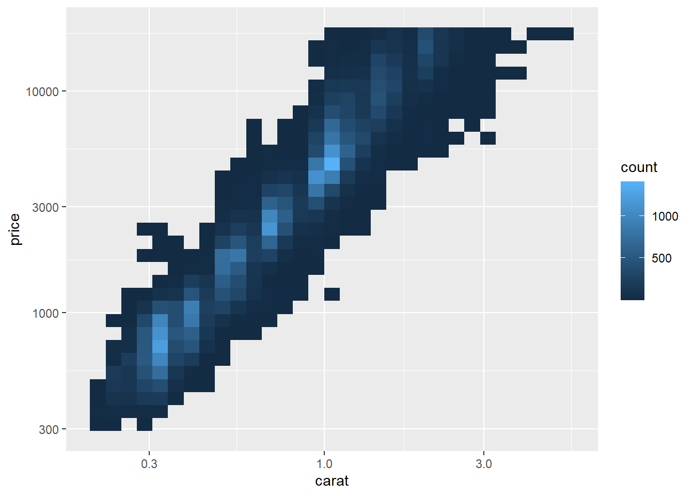
Useful colour scale alternatives are the ColorBrewer scales for certain colour blindness - e.g. red-green colour blindness.
ggplot(mpg, aes(displ, hwy)) +
geom_point(aes(color = drv))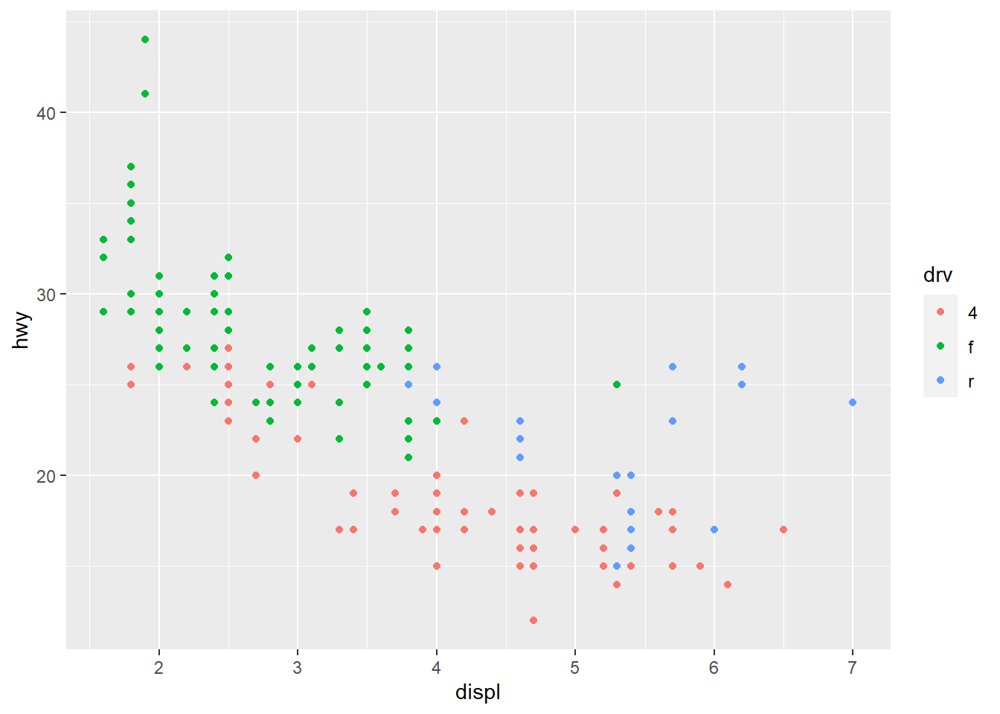
ggplot(mpg, aes(displ, hwy)) +
geom_point(aes(color = drv)) +
scale_colour_brewer(palette = "Set1")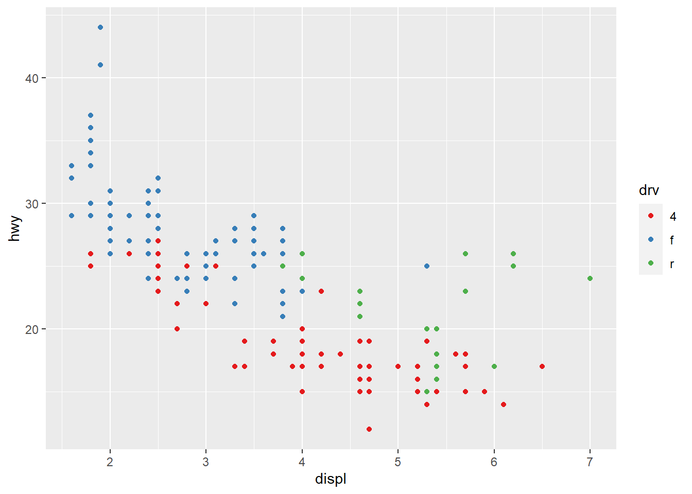
Adding a redundant shape mapping is also completely acceptable. It also ensures the plot is interpretable in black and white.
ggplot(mpg, aes(displ, hwy)) +
geom_point(aes(color = drv, shape = drv)) +
scale_colour_brewer(palette = "Set1")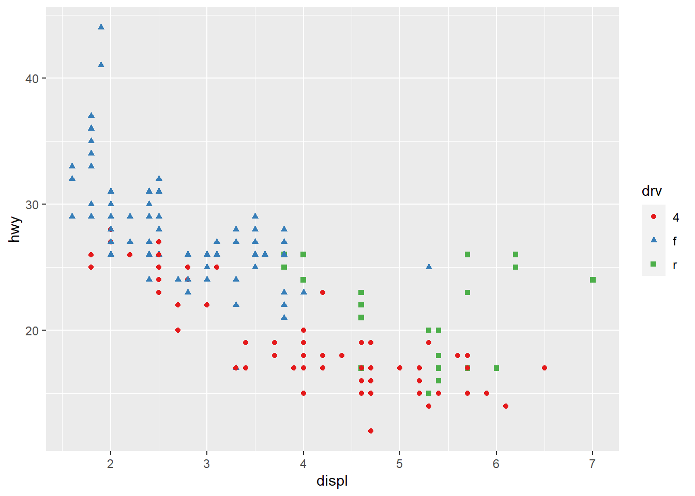
In ColorBrewer the sequential (top) and diverging (bottom) are useful if your categorical values are ordered, or have a “middle”. Often the case if you’ve used cut() to make a continuous variable into a categorical variable.
All ColourBrewer scales.
Use scale_colour_manual() when you have a predefined mapping between values and colours.
presidential %>%
mutate(id = 33 + row_number()) %>%
ggplot(aes(start, id, colour = party)) +
geom_point() +
geom_segment(aes(xend = end, yend = id)) +
scale_colour_manual(values = c(Republican = "red", Democratic = "blue"))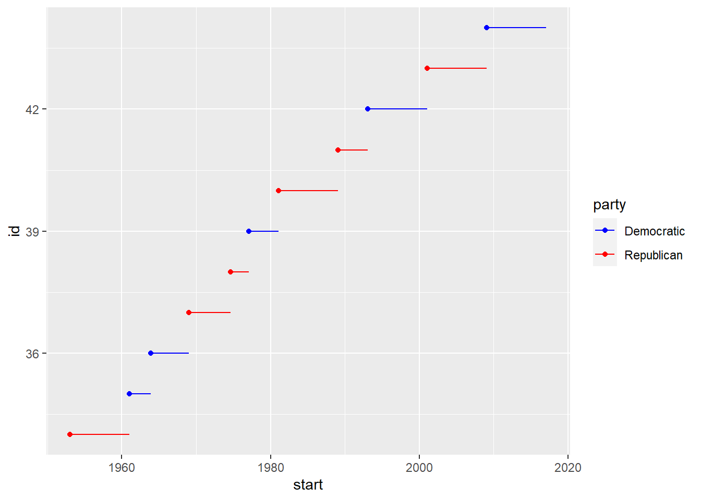
- For continuous colour, use
scale_colour_gradient()orscale_fill_gradient(). - For a diverging scale, use
scale_colour_gradient2(). Here positive and negative values may have different colours. Also useful if you want to distinguish points above or below the mean. scale_colour_viridis()is also a good alternative.
df <- tibble(
x = rnorm(10000),
y = rnorm(10000)
)
ggplot(df, aes(x, y)) +
geom_hex() +
coord_fixed()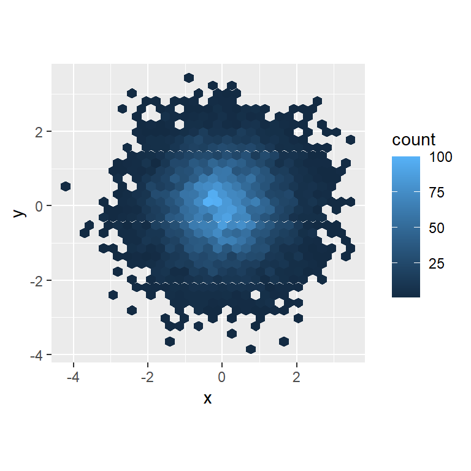
ggplot(df, aes(x, y)) +
geom_hex() +
viridis::scale_fill_viridis() +
coord_fixed()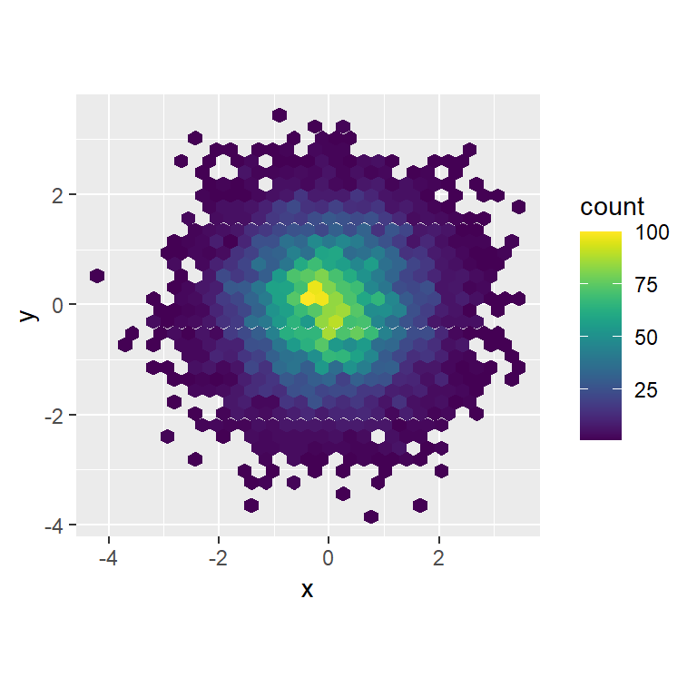
All colour scales have scale_colour_x() and scale_fill_x() for the colour and fill aesthetics.
Exercises
Why doesn’t the following code override the default scale?
The hex should use fill not colour
ggplot(df, aes(x, y)) + geom_hex() + scale_colour_gradient(low = "white", high = "red") + coord_fixed()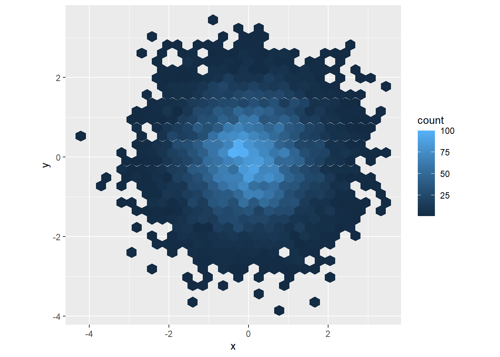
ggplot(df, aes(x, y)) + geom_hex() + scale_fill_gradient(low = "white", high = "red") + coord_fixed()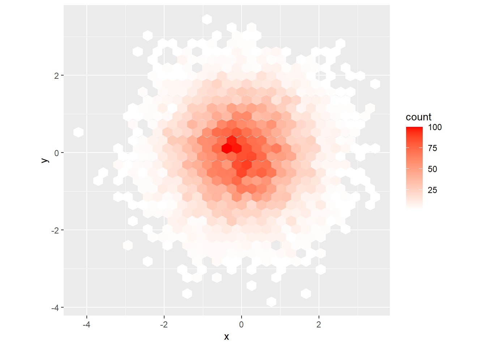
What is the first argument to every scale? How does it compare to
labs()?The
...argument which passes on to the particular scale function in the arguments. The first arg is aesthetics that this scale works with e.g.x,y,colouretc.labsis similar but talks to the labels not the scale.Change the display of the presidential terms by:
- Combining the two variants shown above.
presidential %>% mutate(id = 33 + row_number()) %>% ggplot(aes(start, id, colour = party)) + geom_point() + geom_segment(aes(xend = end, yend = id)) + scale_colour_manual(values = c(Republican = "red", Democratic = "blue")) + scale_x_date(NULL, breaks = presidential$start, date_labels = "'%y")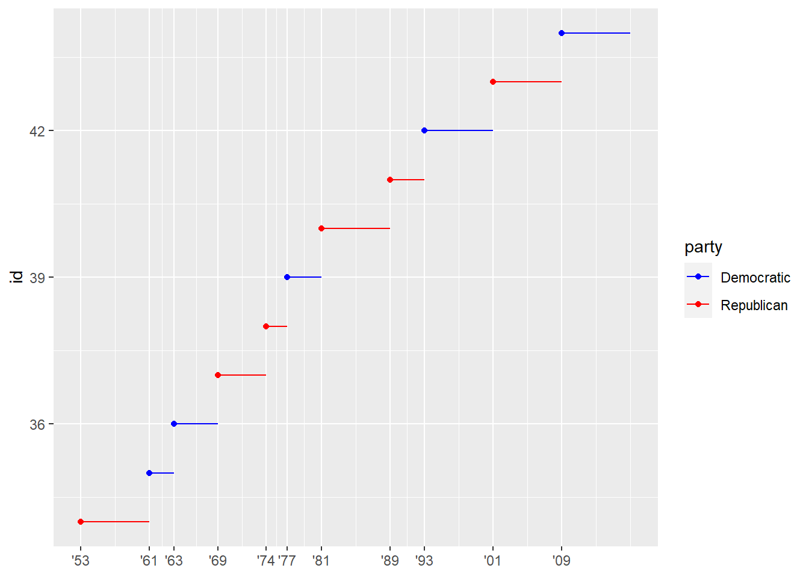
Improving the display of the y axis.
presidential_amend <- presidential %>% mutate(id = 33 + row_number(), id_label = str_c(id, c(rep("th ", 7), "st ", "nd ", "rd ", "th "), c(rep("President", 11))), id_label = fct_reorder(id_label, id)) presidential_amend %>% ggplot(aes(start, id, colour = party)) + geom_point() + geom_segment(aes(xend = end, yend = id)) + scale_colour_manual(values = c(Republican = "red", Democratic = "blue")) + scale_x_date(NULL, breaks = presidential_amend$start, date_labels = "'%y") + scale_y_continuous(breaks = presidential_amend$id, labels = presidential_amend$id_label) + ggrepel::geom_label_repel(aes(label = name), nudge_x = 0.5, nudge_y = 0.4) + labs(y = "", x = "Presidential term", title = str_wrap("Republicans seem to be winning the race in terms of time in office?", width = 70))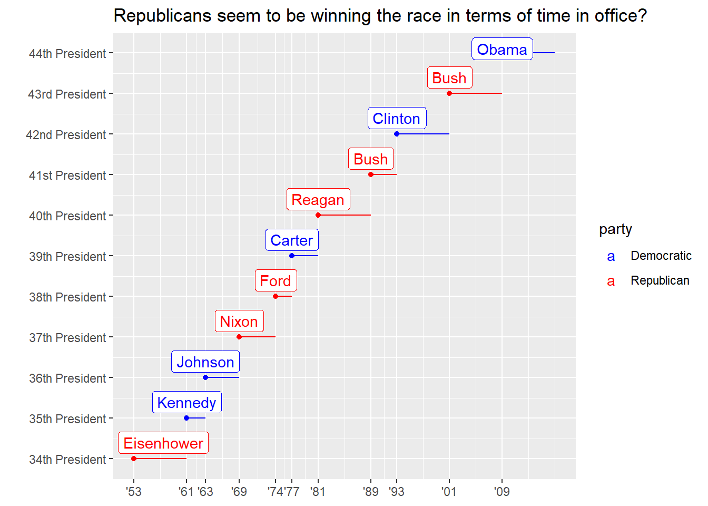
Labelling each term with the name of the president.
Done above.
Adding informative plot labels.
Done above.
Placing breaks every 4 years (this is trickier than it seems!).
presidential_amend <- presidential %>% mutate(id = 33 + row_number(), id_label = str_c(id, c(rep("th ", 7), "st ", "nd ", "rd ", "th "), c(rep("President", 11))), id_label = fct_reorder(id_label, id)) breaks <- function(df){ df %>% mutate(yr_start = year(start), yr_end = year(end)) %>% summarise(min_start = min(yr_start), max_end = max(yr_end)) } break_df <- presidential_amend %>% breaks() presidential_amend %>% ggplot(aes(start, id, colour = party)) + geom_point() + geom_segment(aes(xend = end, yend = id)) + scale_colour_manual(values = c(Republican = "red", Democratic = "blue")) + scale_x_date(NULL, breaks = seq.Date(ymd(str_glue("{break_df$min_start}0101")), ymd(str_glue("{break_df$max_end}0101")), "4 years"), date_labels = "'%y") + scale_y_continuous(breaks = presidential_amend$id, labels = presidential_amend$id_label) + ggrepel::geom_label_repel(aes(label = name), nudge_x = 0.5, nudge_y = 0.4) + labs(y = "", x = "Presidential term", title = str_wrap("Republicans seem to be winning the race in terms of time in office?", width = 70))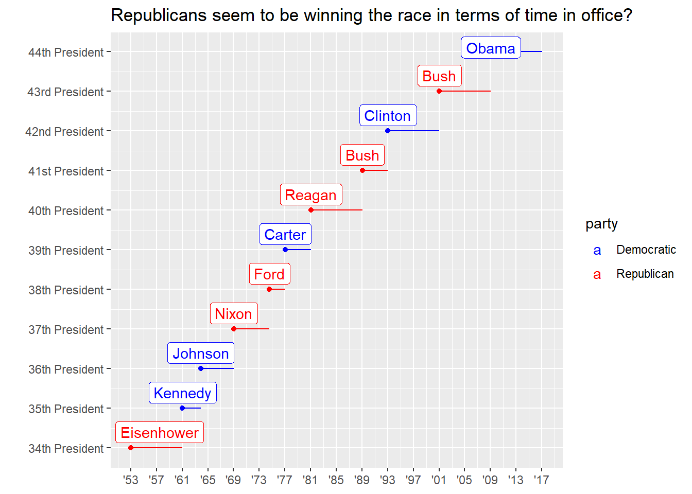
Use
override.aesto make the legend on the following plot easier to see.ggplot(diamonds, aes(carat, price)) + geom_point(aes(colour = cut), alpha = 1/20)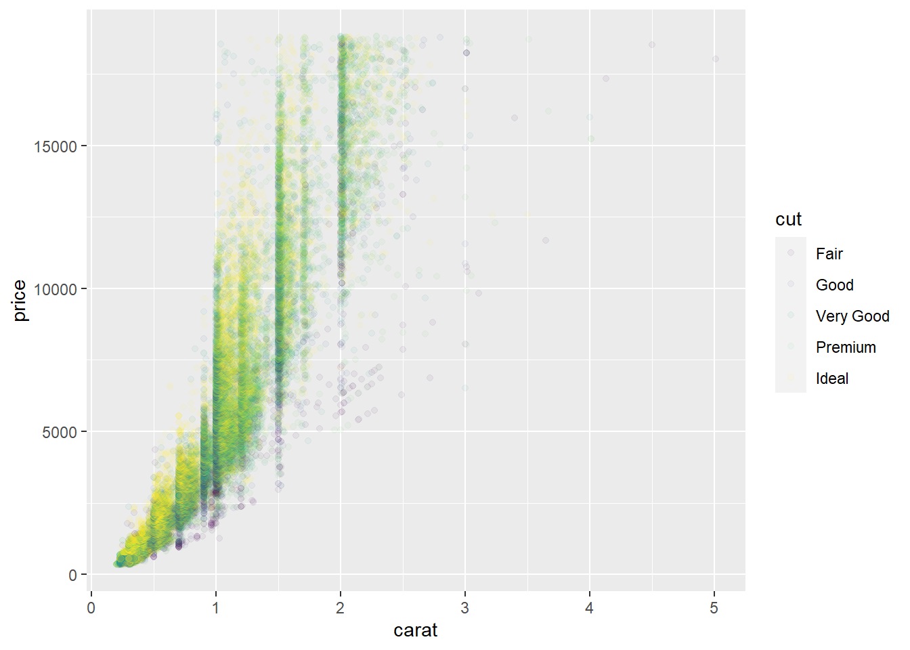
ggplot(diamonds, aes(carat, price)) + geom_point(aes(colour = cut), alpha = 1/20) + guides(colour = guide_legend(override.aes = list(alpha = 1)))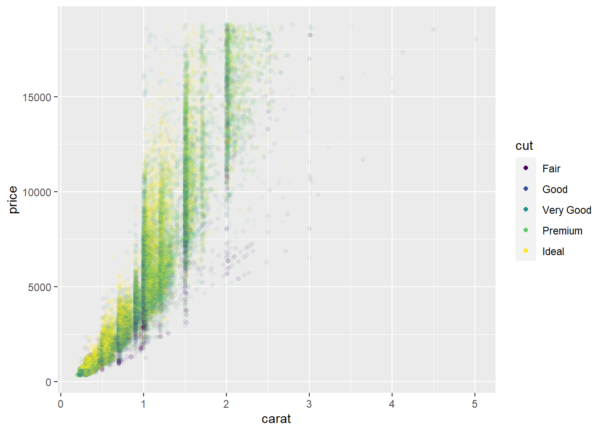
Zooming
You can control plot limits by:
- Adjusting what data are plotted
- Setting the limits in each scale
- Setting
xlimandylimincoord_cartesian()
To zoom in on a region of the plot, use coord_cartesian().
ggplot(mpg, aes(displ, hwy)) +
geom_point(aes(colour = class)) +
geom_smooth() +
# zoom in to a specific set of coords
coord_cartesian(xlim = c(5,7), ylim = c(10,30))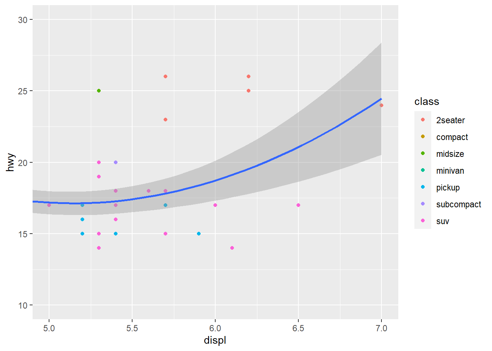
mpg %>%
filter(displ >= 5 & displ <= 7,
hwy >= 10 & hwy <= 30) %>%
ggplot(aes(displ, hwy)) +
geom_point(aes(colour = class)) +
# we draw a smoothing fn for the data
# but we filtered obs to just the ones we want to see
geom_smooth()
Notice above that coord_cartesian() is the true zoom in, the smoothing function considers all data. In the filtered graph the smoothing function considers only the filtered observations so it is a very different view of the data. Consider your use case for zooming then choose a method.
suv <- mpg %>% filter(class == "suv")
compact <- mpg %>% filter(class == "compact")
ggplot(suv, aes(displ, hwy, colour = drv)) +
geom_point()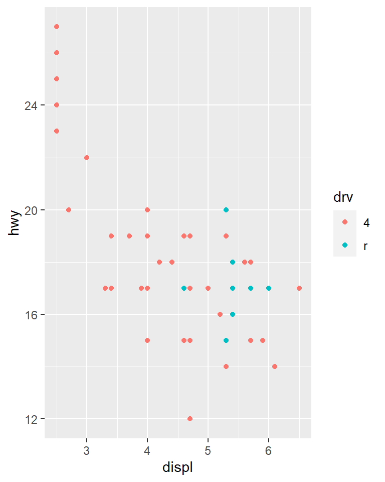
ggplot(compact, aes(displ, hwy, colour = drv)) +
geom_point()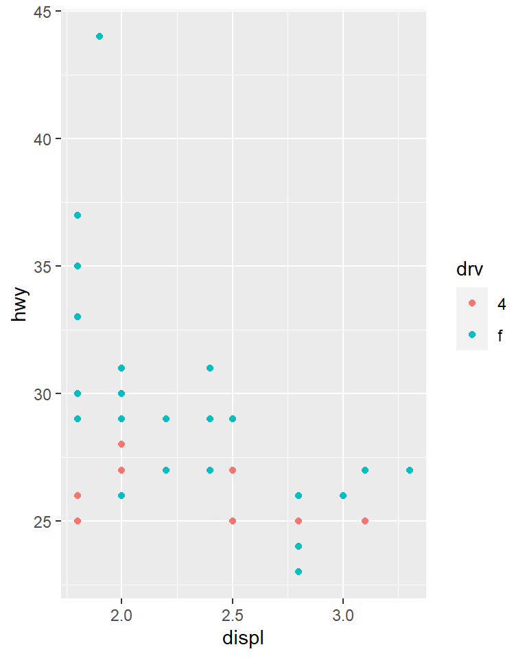
The scales above are however different so comparisons are not easy. You may share scales across multiple plots.
x_scale <- scale_x_continuous(limits = range(mpg$displ))
y_scale <- scale_y_continuous(limits = range(mpg$hwy))
col_scale <- scale_colour_discrete(limits = unique(mpg$drv))
ggplot(suv, aes(displ, hwy, colour = drv)) +
geom_point() +
x_scale +
y_scale +
col_scale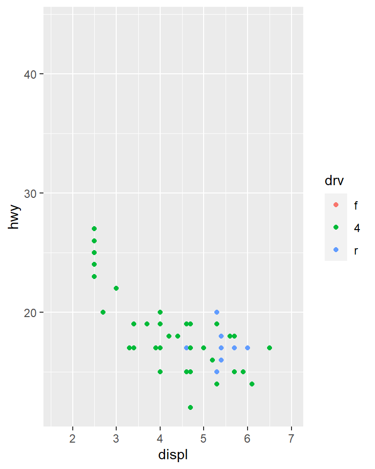
ggplot(compact, aes(displ, hwy, colour = drv)) +
geom_point() +
x_scale +
y_scale +
col_scale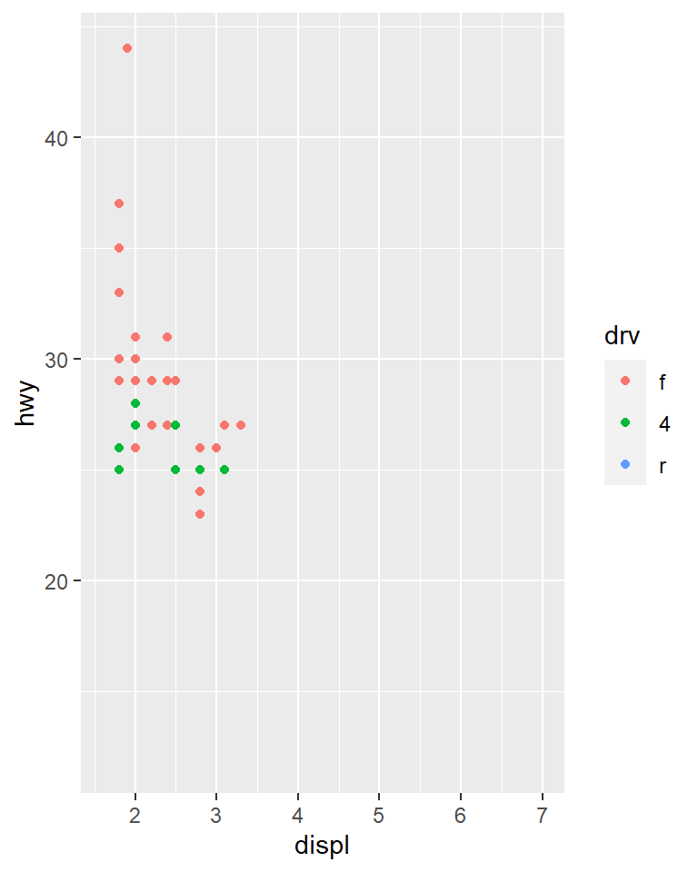
We could have used faceting but this technique is useful if for instance, you want spread plots over multiple pages of a report.
Themes
Themes
Non-data elements of your plot can be amended with a theme.
ggplot(mpg, aes(displ, hwy)) +
geom_point(aes(color = class)) +
geom_smooth(se = FALSE) +
theme_bw()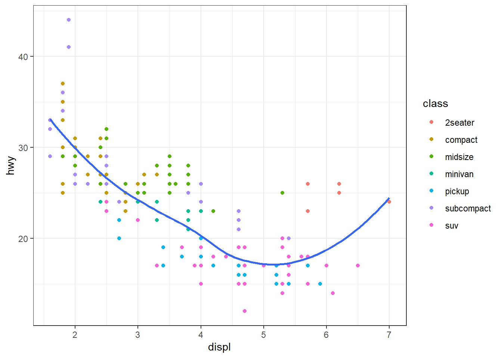
ggplot(mpg, aes(displ, hwy)) +
geom_point(aes(colour = class)) +
geom_smooth(se = FALSE) +
theme_light()
ggplot(mpg, aes(displ, hwy)) +
geom_point(aes(colour = class)) +
geom_smooth(se = FALSE) +
theme_dark()
sessionInfo()
#> R version 3.6.3 (2020-02-29)
#> Platform: x86_64-w64-mingw32/x64 (64-bit)
#> Running under: Windows 10 x64 (build 18363)
#>
#> Matrix products: default
#>
#> locale:
#> [1] LC_COLLATE=English_South Africa.1252 LC_CTYPE=English_South Africa.1252
#> [3] LC_MONETARY=English_South Africa.1252 LC_NUMERIC=C
#> [5] LC_TIME=English_South Africa.1252
#>
#> attached base packages:
#> [1] stats graphics grDevices utils datasets methods base
#>
#> other attached packages:
#> [1] werpals_0.1.0 lubridate_1.7.9 magrittr_1.5 flair_0.0.2
#> [5] forcats_0.5.0 stringr_1.4.0 dplyr_1.0.2 purrr_0.3.4
#> [9] readr_1.4.0 tidyr_1.1.2 tibble_3.0.3 ggplot2_3.3.2
#> [13] tidyverse_1.3.0 workflowr_1.6.2
#>
#> loaded via a namespace (and not attached):
#> [1] viridis_0.5.1 httr_1.4.2 viridisLite_0.3.0 jsonlite_1.7.1
#> [5] splines_3.6.3 modelr_0.1.8 assertthat_0.2.1 highr_0.8
#> [9] emo_0.0.0.9000 cellranger_1.1.0 yaml_2.2.1 ggrepel_0.8.2
#> [13] pillar_1.4.6 backports_1.1.6 lattice_0.20-38 glue_1.4.2
#> [17] digest_0.6.27 RColorBrewer_1.1-2 promises_1.1.0 rvest_0.3.6
#> [21] colorspace_1.4-1 htmltools_0.5.0 httpuv_1.5.2 Matrix_1.2-18
#> [25] pkgconfig_2.0.3 broom_0.7.2 haven_2.3.1 scales_1.1.0
#> [29] whisker_0.4 later_1.0.0 git2r_0.26.1 mgcv_1.8-31
#> [33] generics_0.0.2 farver_2.0.3 ellipsis_0.3.1 withr_2.2.0
#> [37] hexbin_1.28.1 cli_2.1.0 crayon_1.3.4 readxl_1.3.1
#> [41] evaluate_0.14 ps_1.3.2 fs_1.5.0 fansi_0.4.1
#> [45] nlme_3.1-144 xml2_1.3.2 tools_3.6.3 hms_0.5.3
#> [49] lifecycle_0.2.0 munsell_0.5.0 reprex_0.3.0 compiler_3.6.3
#> [53] rlang_0.4.8 grid_3.6.3 rstudioapi_0.11 labeling_0.3
#> [57] rmarkdown_2.4 gtable_0.3.0 DBI_1.1.0 R6_2.4.1
#> [61] gridExtra_2.3 knitr_1.28 utf8_1.1.4 rprojroot_1.3-2
#> [65] stringi_1.5.3 Rcpp_1.0.4.6 vctrs_0.3.2 dbplyr_2.0.0
#> [69] tidyselect_1.1.0 xfun_0.13